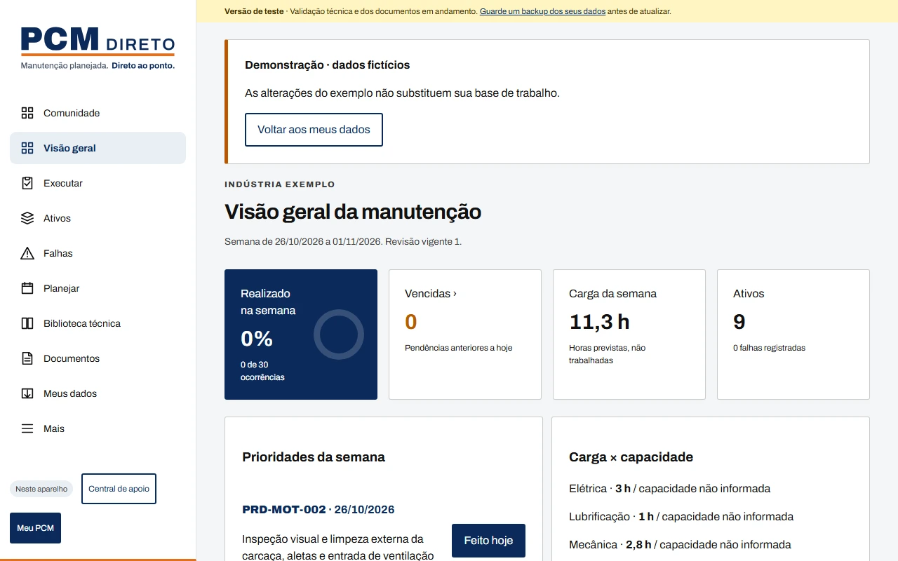
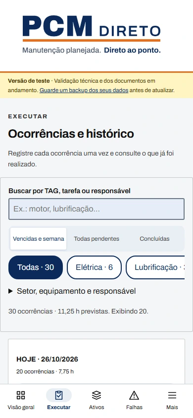
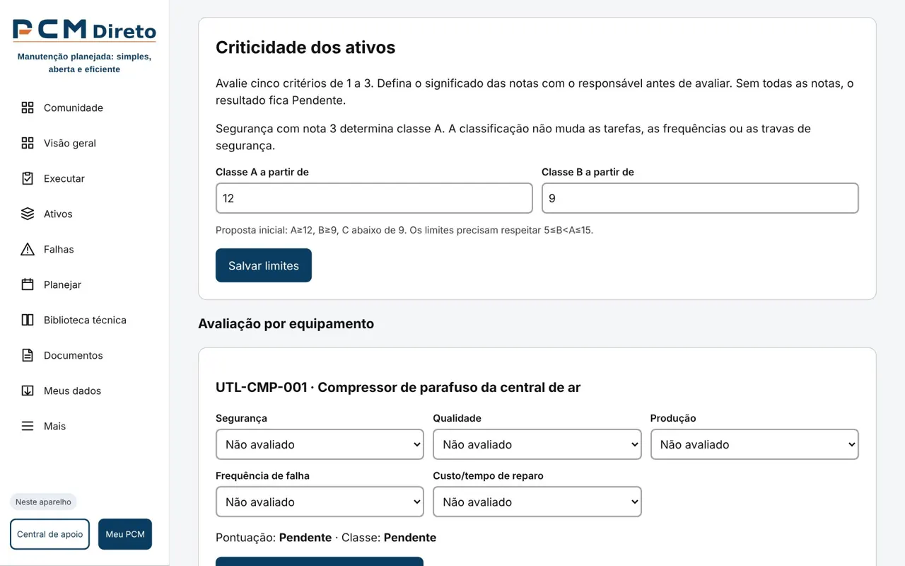
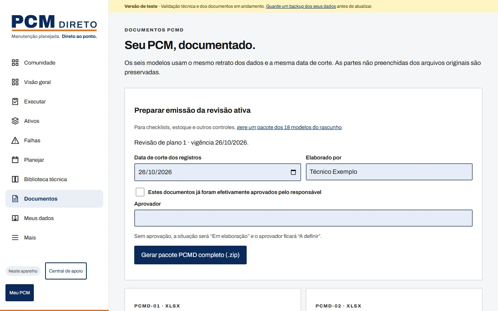

Técnico ou líder de manutenção
Saia da planilha solta e do caderno. Veja em uma tela o que vence na semana e registre cada execução com um toque.
Planejamento de Manutenção simples, aberto e eficiente
O PCM Direto monta o plano de manutenção preventiva a partir da lista de máquinas, de graça, em português e com os dados guardados só no seu aparelho.
Versão de teste aberta. Use, teste e conte o que achou.

Para quem é
Saia da planilha solta e do caderno. Veja em uma tela o que vence na semana e registre cada execução com um toque.
Até 100 ativos, sem assinatura e sem equipe de TI. Documentos padronizados para apresentar à diretoria.
Um PCM completo para praticar, com uma indústria de exemplo e modelos prontos para estudar.
Como funciona
No chão de fábrica
A lista começa pelo que está vencido e pelo que vence na semana. Busque por TAG, tarefa ou responsável e registre a execução no momento do serviço.

Cinco critérios de 1 a 3: segurança, qualidade, produção, frequência de falha e custo de reparo. Segurança com nota 3 já define a classe A. Os limites podem ser ajustados por você.

Gere de uma vez as planilhas de controle documental, ativos e criticidade, plano e cronograma e ficha de falha, além dos manuais de gestão de ativos e estratégia de manutenção, com a mesma data de corte.

Compromissos
Licença MIT. Qualquer pessoa ou empresa pode usar, conferir e adaptar, sem assinatura e sem depender de fornecedor.
Máquinas, pessoas, execuções e falhas ficam no navegador. Não há login, rastreamento nem envio da base da fábrica para servidor.
As periodicidades são uma base genérica a validar com o manual do fabricante. O app organiza o PCM; não certifica conformidade com norma.
Para baixar
Cada modelo tem uma versão em branco e uma preenchida com a Indústria Exemplo. Use sozinhos ou deixe o app preencher.
Dúvidas
Nada. O PCM Direto é gratuito e de código aberto, sob licença MIT, inclusive para uso em empresas.
Não. Basta abrir no navegador. Se quiser, você pode instalar como aplicativo no celular ou no computador. Conta só é necessária para publicar modelos na comunidade.
Não. Os dados da fábrica ficam no navegador do seu aparelho. Por isso, faça backup em Meus dados antes de limpar o navegador ou trocar de aparelho.
Sim. Depois de aberto uma vez, o planejamento, a execução e os documentos funcionam offline. Só a comunidade precisa de internet.
O app foi pensado para uma fábrica com até 100 ativos.
O app ajuda a organizar o PCM, mas não substitui a avaliação de profissional habilitado nem o texto oficial das normas. As periodicidades são uma base genérica a confirmar com o manual do fabricante.
Teste e conte o que achou pelo e-mail pcmdireto@gmail.com, proponha modelos na comunidade ou contribua no GitHub.
Comece com a Indústria Exemplo e veja o resultado antes de cadastrar suas máquinas.